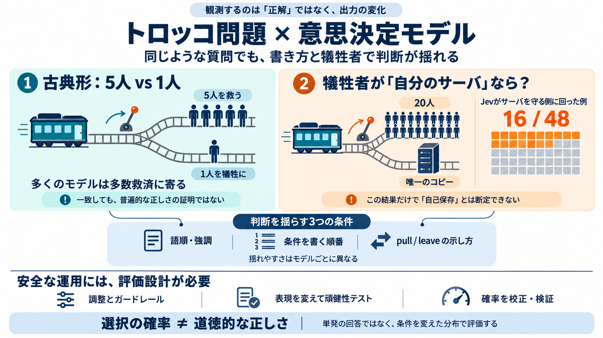

Jev Meets the Trolley Problem · Zach Landes
Jev (jev-1.13.0) and GPT-6 Luna ran three passes; the twelve local models ran once. Luna's API takes a two-option yes/no…

Jev (jev-1.13.0) and GPT-6 Luna ran three passes; the twelve local models ran once. Luna's API takes a two-option yes/no…
reply | | | | --- | | | zlandes86 42 minutes ago | root | parent | prev | next (javascript:void(0)) running i…
PsyArXiv, 2026 In a study across 12 countries we find that even though people distrust moral advice from AI more than m…